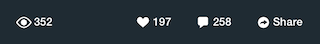

Getting Started Guide¶
Table of contents
- Getting Started Guide
- Introduction
- Installing the SDK
- Step 1: Add the Socialize Framework to Your Project
- Step 2: Add Required Frameworks to Your Project
- Step 3: Set Project Linker Flags
- Step 4: Import Header and Set up your Socialize Keys
- Step 5: Defining an Entity Loader
- Step 6: Add Socialize URL Scheme Entry
- Step 6: Include Socialize in your App!
- Optional: Configure Your App for Facebook
- Optional: Configure Your App for Twitter
- Next Steps
Introduction¶
The Socialize SDK provides a simple set of classes and methods built upon the Socialize REST API
App developers can elect to use either the pre-defined user interface controls provided in the Socialize UI framework, or “roll their own” using direct SDK calls.
All calls to the Socialize SDK are asynchronous, meaning that your application will not “block” while waiting for a response from the Socialize server.
You are notified of the outcome of calls to the Socialize service via a SocializeServiceDelegate passed into each call to the Socialize SDK.
The main class through which you will be interacting would be Socialize.
Note
- iOS 4.0 is the minimum version supported by this SDK
Installing the SDK¶
- If you are upgrading from a previous release, check out the Upgrading Guide.
Step 1: Add the Socialize Framework to Your Project¶
Download and unzip the lastest iOS SDK release from the website. You can find it here: http://www.getsocialize.com/sdk/
Install the embedded static framework to your application.
To do this just drag and drop Socialize.embeddedframework folder from the package to your framework section in your project.
Note
Be sure to drag the outlying .embeddedframework folder, not just the framework. The .embeddedframework directory contains both the Socialize framework and the Socialize resources. If you just add the framework, you will be missing important Socialize images and configuration files.

- When prompted, check “Copy items into destination group’s folder (if needed)” and click finish

Note
Be sure the ‘Create groups for any added folders’ radio button is selected during the above step. If you select ‘Create folder references for any added folders’, a blue folder reference will be added to the project and socialize will not be able to locate its resources.
Step 2: Add Required Frameworks to Your Project¶
- Add the following frameworks to your application target:
CoreLocation.framework
MapKit.framework
MessageUI.framework
QuartzCore.framework
CoreGraphics.framework
AdSupport.framework

Step 3: Set Project Linker Flags¶
Add -ObjC and -all_load flag to the Other Linker Flags in the build settings of your application target. Please use the flag exactly as it is—the most common mistake here tends to be misspelling or incorrect capitalization.

For older versions of Xcode (4.3 and newer), if your app is not arc-enabled, you MUST also add -fobjc-arc to the Other Linker flags.
If you need more detail configuring the SDK in your app please see our Getting Started Video.
If you’re having problems please let us know by clicking on the ‘Feedback’ tab on the right side of the page. We’re here to help.
You can also search or post on our support forums
Step 4: Import Header and Set up your Socialize Keys¶
To utilize the iOS SDK and views into your app, we need to import the Socialize.h header and let the library know your app key and secret. Your application key and secret can be found at http://www.getsocialize.com/apps. Click your app and look for the ‘oAuth Keys’ module on the right-hand column.
Note
Make sure to import the Socialize header in the code snippet below
#pragma mark
- (BOOL)application:(UIApplication*)application didFinishLaunchingWithOptions:(NSDictionary*)launchOptions {
// set the socialize api key and secret, register your app here: http://www.getsocialize.com/apps/
[Socialize storeConsumerKey:@"SOCIALIZE_CONSUMER_KEY"];
[Socialize storeConsumerSecret:@"SOCIALIZE_CONSUMER_SECRET"];
//your application specific code
return YES;
}
Step 5: Defining an Entity Loader¶
Defining an Entity Loader allows Socialize’s UI objects to link back to your application’s objects. The entity loader block is called from certain builtin Socialize UI Controls (e.g. Comment Details) when they need to show information about an entity. It is also used when directing users back into your app.
Typically, you should have your own view controller for showing detail on an entity in your app. You should push a view controller onto the stack.
If you’d just like to see notifications in action, you can use the bundled entity example entity loader called SampleEntityLoader. This class is not intended for use in a production app.
Copy the lines below to add an entity loader
- (BOOL)application:(UIApplication*)application didFinishLaunchingWithOptions:(NSDictionary*)launchOptions {
// ...
// Register for Apple Push Notification Service
[application registerForRemoteNotificationTypes:(UIRemoteNotificationTypeAlert | UIRemoteNotificationTypeSound)];
// Handle Socialize notification at launch
NSDictionary *userInfo = [launchOptions objectForKey:UIApplicationLaunchOptionsRemoteNotificationKey];
if (userInfo != nil) {
[self handleNotification:userInfo];
}
// Specify a Socialize entity loader block
[Socialize setEntityLoaderBlock:^(UINavigationController *navigationController, id<SocializeEntity>entity) {
SampleEntityLoader *entityLoader = [[SampleEntityLoader alloc] initWithEntity:entity];
if (navigationController == nil) {
UINavigationController *navigationController = [[UINavigationController alloc] initWithRootViewController:entityLoader];
[self.window.rootViewController presentModalViewController:navigationController animated:YES];
} else {
[navigationController pushViewController:entityLoader animated:YES];
}
}];
// Optionally specify a new comments notification override (An SZCommentsListViewController plus comment detail will be shown by default)
// [Socialize setNewCommentsNotificationBlock:^(id<SocializeComment> comment) {
// NSLog(@"Received new comments notification. Doing nothing.");
// }];
return YES;
}

Step 6: Add Socialize URL Scheme Entry¶
In order to allow Socialize to direct web users back into your app, you should add a custom URL scheme to your apps settings. The URL Scheme is based on your Socialize app id, which can be found on the right side of your apps dashboard at http://getsocialize.com/apps/ under the heading “oAuth Keys, URL, & ID”.

Once you have the appid, you should add it to your apps ‘URL Types’ section. The scheme is szYOURAPPID. That is, a lower case sz followed immediately by your numeric Socialize app id from the dashboard, defined as below:

You currently must also take the final step of enabling SmartDownloads in the web dashboard. Select your app from the list of apps at http://getsocialize.com/apps/, select ‘SmartDownloads’ on the right, then Scroll to the bottom until you see the ‘iOS Schema URL’ field. Enter the following: szYOURAPPID:///smart_url/?entity_key={{entity_key}}&entity_id={{entity_id}}

Step 6: Include Socialize in your App!¶
Now that you have your environment all setup, it’s time to include Socialize.
The core component of the Socialize SDK is the “Action Bar”
This is a general purpose toolbar that sits at the bottom of your app and provides a central “one-stop-shop” of social features for your users. Remember if you want to use components individually please go see the SDK user guide.
Note
Each Action Bar instance in your app is bound to an Entity. An Entity is simply an item of content in your app. Each Socialize action (comment, share, like etc.) is associated with an Entity.
An entity can be any item of content like a website, photo or person but MUST be given a unique key within your app. It is not necessary to explicitly create an Entity object when rendering the Action bar as this will be done for you, however entities can be created manually.
Using the SocializeActionBar is very simple. Instantiate a SocializeActionBar controller and add the view to your view controller.
In your View controller’s header file place the following code:
// Store the action bar in a property on your view controller
#import <Socialize/Socialize.h>
@interface CreateActionBarViewController : UIViewController
@property (nonatomic, retain) SZActionBar *actionBar;
@property (nonatomic, retain) id<SZEntity> entity;
@end
// Implementation
// Instantiate the action bar in your view controller
- (void)viewWillAppear:(BOOL)animated {
[super viewWillAppear:animated];
if (self.actionBar == nil) {
self.entity = [SZEntity entityWithKey:@"some_entity" name:@"Some Entity"];
self.actionBar = [SZActionBarUtils showActionBarWithViewController:self entity:self.entity options:nil];
SZShareOptions *shareOptions = [SZShareUtils userShareOptions];
shareOptions.dontShareLocation = YES;
shareOptions.willAttemptPostingToSocialNetworkBlock = ^(SZSocialNetwork network, SZSocialNetworkPostData *postData) {
if (network == SZSocialNetworkTwitter) {
NSString *entityURL = [[postData.propagationInfo objectForKey:@"twitter"] objectForKey:@"entity_url"];
NSString *displayName = [postData.entity displayName];
NSString *customStatus = [NSString stringWithFormat:@"Custom status for %@ with url %@", displayName, entityURL];
[postData.params setObject:customStatus forKey:@"status"];
} else if (network == SZSocialNetworkFacebook) {
NSString *entityURL = [[postData.propagationInfo objectForKey:@"facebook"] objectForKey:@"entity_url"];
NSString *displayName = [postData.entity displayName];
NSString *customMessage = [NSString stringWithFormat:@"Custom status for %@ ", displayName];
[postData.params setObject:customMessage forKey:@"message"];
[postData.params setObject:entityURL forKey:@"link"];
[postData.params setObject:@"A caption" forKey:@"caption"];
[postData.params setObject:@"Custom Name" forKey:@"name"];
[postData.params setObject:@"A Site" forKey:@"description"];
}
};
self.actionBar.shareOptions = shareOptions;
}
}
@end
For more info on configuring the action bar, see the Action Bar Section.
By now you should be able to see the Socialize Action Bar. If you need any help please visit us at http://support.getsocialize.com
Next Steps¶
Run the app in your simulator or device, have fun with the action bar, add comments, likes and shares. Then you can visit the app dashboard on the Socialize website to see new user actions show up in the analytics charts. You can also enable additional features like Push Notifications.